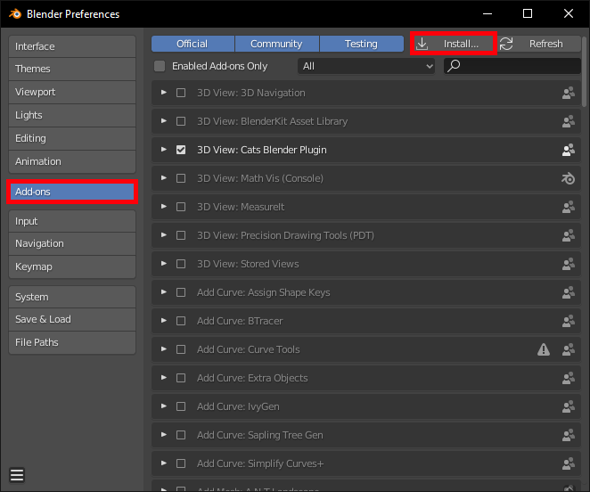
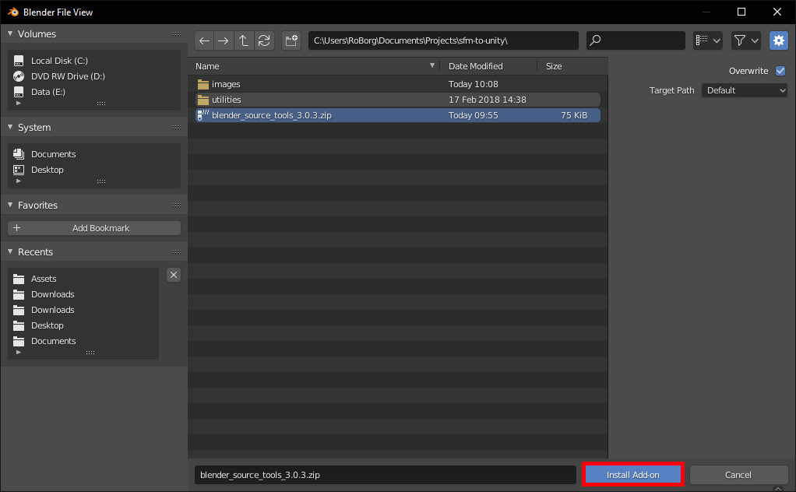
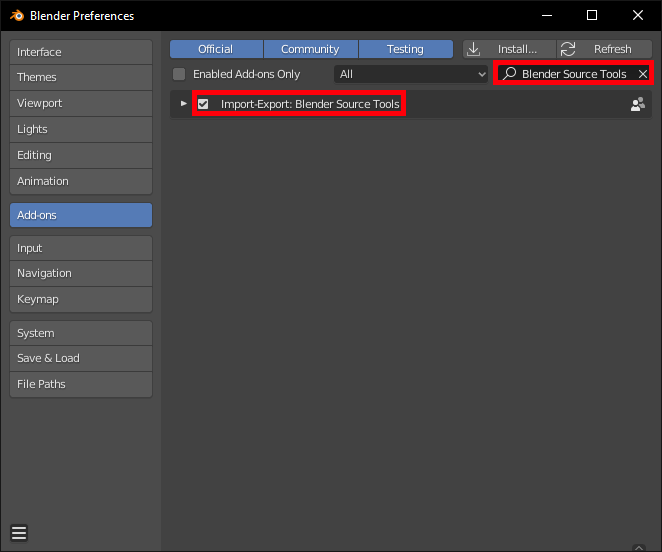
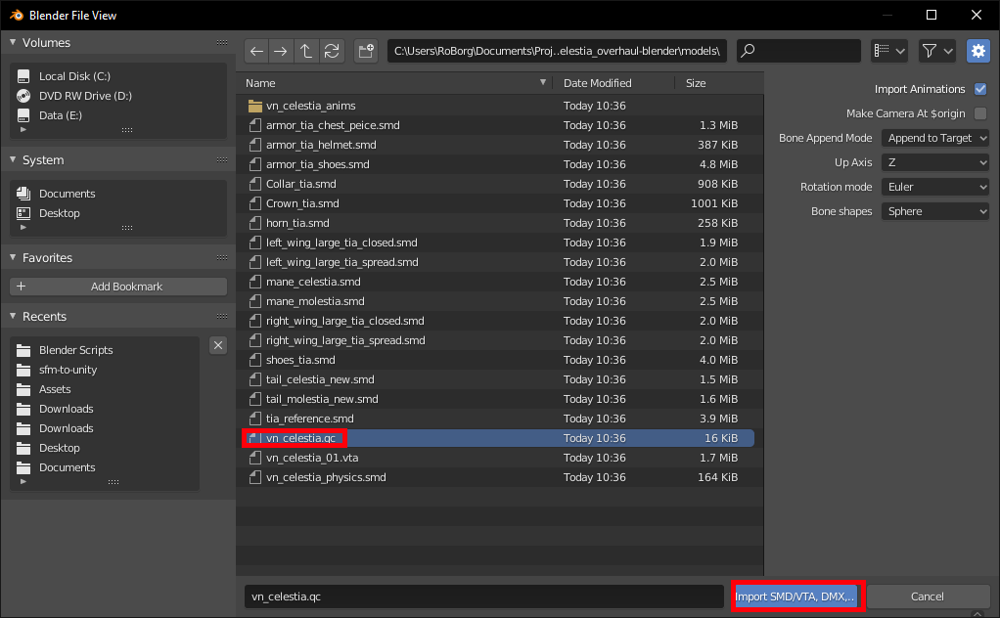

Blender -
download. Used to convert 3d models to FBX format.
Blender Source Tools -
download. Used to load decompiled SFM files into Blender.
BoneFix -
download. Optional - used to fix skeletons.
Crowbar (ZIP Version) -
download. Used to decompile SFM files.
VTFEdit -
download. Used to convert VTF textures to PNG.
Installation
Installing Unity & Blender
Install Unity and Blender as normal - the default options should be fine.
Installing Blender Source Tools
Load Blender and click on the
File menu and choose
User Preferences, or press
Ctrl + Alt + U.
Click the
Addons tab then click the
Install from File button.

Install from File
Locate the blender_source_tools.xxx.zip file you downloaded earlier and click the
Install from File button.

Select Plugin File
Check the plugin is active by typing "source" into the addon search box, and making sure the checkbox is checked next to
Import-Export: Blender Source Tools.

Ensure Plugin is Active
Installing BoneFix
Create a folder to store the scripts, and move
BoneFix.py into it.
Load Blender and click on the
File menu and choose
User Preferences, or press
Ctrl + Alt + U.
Click the
File tab and set the
Scripts folder to where you placed
BoneFix.py, then click the
Save User Settings button.
User Scripts Folder
Installing Crowbar & VTFEdit
Extract the each zip file into its own folder.
Convert the Model
Your SFM file will probably be a zip file - extract it and find the folder with the
.mdl file you want to use.
Before starting, it's best to create a new folder to store your converted model and textures in.
Load Crowbar and on the
Decompile tab, open your
.mdl file.
Choose your File
Click the
Full path radio button and choose folder you want to put the decompiled files in, then click
the
Decompile button. You can leave all the options at their default values.
Decompile the Model
When decompilation is complete your model will be ready to import into Blender, but the textures need converting separately.
Convert the Textures
Open VTFEdit and click the
Tools menu then choose
Convert Folder.
Select the input folder that has the
.vtf and
.vmf files in it. Select an output folder for the
.png files - use the folder you created for the decompiled model. Click the
Convert button to convert the textures.
Decompile the Textures
Load into Blender
Open Blender and delete the Camera, Cube and Lamp objects.
Click the
File menu and go to the
Import submenu and choose
Source Engine (.smd, .vta, .dmx .qc).
Blender Import Menu
Locate the folder you extrated the model into and select the
*.qc file. Click the
Import SMD/VTA, DMX, QC button. This can take quite a while - don't worry if Blender seems unresponsive.

Blender Import *.qc File
Fix the Skeleton (Optional)
This is an optional step - follow it if your model has a skeleton you want to use in Unity
Click the mode tool and select
Object Mode then right-click on any bone to select the skeleton.
Select the Skeleton
Go to the Python console by clicking the window button and selecting
Python Console. Note - this was called
Scripts in older versions of Blender.
Go to the Python Console
Run the script using the following code (don't forget to change the script path!):
exec(open("c:\\users\\RoBorg\\Documents\\Blender Scripts\\BoneFix.py").read())
If you're using Python 2, you can use this instead:
execfile("c:\\users\\RoBorg\\Documents\\Blender Scripts\\BoneFix.py")
Export to Unity
Click on the
File menu then choose the
Export and click on
FBX (.fbx).
Blender Export Menu
Type a filename and click the
Export FBX button.
Blender Export FBX
Load into Unity
Load Unity and open your project or create a new one.
In the Project window, create a new folder for your model and under that folder create two more, called
Materials and
Textures.
Drag-drop your
.fbx file into your model folder, and the
*.png files into the
Textures folder
Export the materials from the model by selecting the model and going to the
Inspector and choosing the
Materials tab. Make sure the
Import Materials checkbox is checked, then click the
Extract Materials button. Choose the
Materials folder you created previously.
Extracting Materials
Assign the correct texture to each material by going to the
Materials folder in the
Project windows and clicking on each material in turn. Click the circle icon next to
Albedo and choose the correct texture from the
Textures folder - it should have the same name as the material. Note that not all materials will
have a texture - they may just be solid colours.
Remove the colour cast from your materials by selecting all of them in the
Project window then clicking the colour swatch next to
Albedo and set it to white.
Go to the
Textures folder and select all the textures, then in the
Inspector check the
Alpha Is Transparency checkbox and click the
Apply button.
Texture Transparency
{kind=link}
{kind=link}
{kind=link}
{kind=link}

{kind=link}

{kind=link}
{kind=link}
{kind=link}
{kind=link}
{kind=link}
{kind=link}

{kind=link}